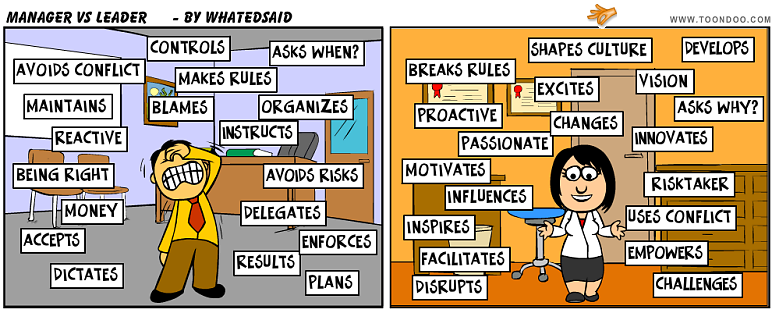

Welcome to Greg Horvath's devops/SRE professional profile
This blog is a collection of notes, random thoughts of some technical experiences with a link for reference, techniques I'm familiar with and I like or liked to work with in the past.
Service Reliability Engineering skills/experience
Build tools / automation
Big data
Traffic managment
- DNS load balancing
- Layer3 DSR , presentation here and article here
- Apache HTTP Server
- Apache Trafficserver
- NGINX
- HAProxy
Monitoring / observation
System administration skills/experience
Virtualization
Performance engineering
Managment experience
- Agile software development
- Waterfall software development
- Scrum software development
- Kanban software development
- My favorite Agile guru, Tobias Mayer
- Document and share, like this site
- Leadership is a choice program by Sheppard Partners 
Code / programming
Project work
- Project work with Vagrant/Virtualbox/HAProxy
- Project work - Ansible patch for playbook execution timestamps
- CVS to JSON converter in Go
Desktop OS in preference
Interview questions
Some questions I ask while interviewing:
Why would we use TCP protocol instead of UDP?
Describe how TCP works?
What does a proxy server do?
How does network address translation work?
How many hosts are in a subnet?
what command would you use to resolve a host or FQDN?
What utilities and/or commands do you know which can be used to examine network interfaces?
How do you see all open ports on a host?
How much space does a host have?
how would find the files being used by a process?
how do find if a process is running? (apache?)
How do you install a server without a physical installation media?
Example of proxy server you know
Example of a firewall solution you know
What is RAID 0?
What is RAID 5?
What is RAID 1?
What does mean Predictive Failure?
Name two ways to search through the interactive command history.
What is the purpose of /etc/sudoers file?
Say you are looking for a file but you do not know where the file is on the server? How would you find it?
You have a problem ssh ing to a server, what steps would you take to identify the issue?
How does SSH work?
What is the advantage/disadvantage of using RAID 0?
Vim or Emacs
How can you test if a file is writable ?
What command will put a job in the background so it keeps running after logging out?
What file contains: root (hd0,0)
What is the value of the following BASH variable: $$
What is the value of the following BASH variable: $?
What is the value of the following BASH variable: $@
the Linux boot sequence
How do you change efficiently machine time zone on RHEL?
What is the result of type help ?
what is proc? what is it used for?
SIG KILL code?
What is the difference between a process and a thread?
What utilities do you know about which can be used to examine system performance?
How do you validate a process (to see if it is working properly)?
Which commands would you use to create logical volumes on linux?
What is the difference between the ext2 and ext3 filesystems?
Hobby
- photography